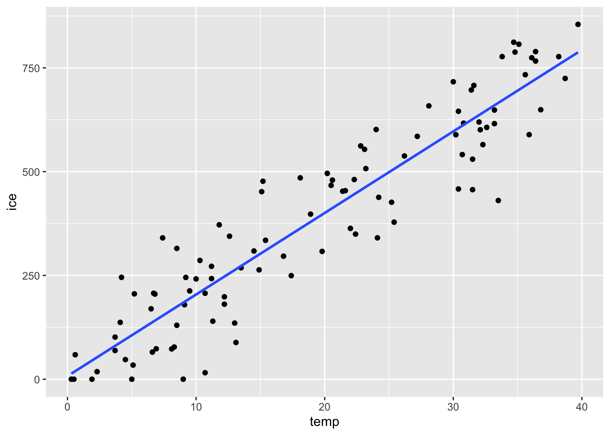
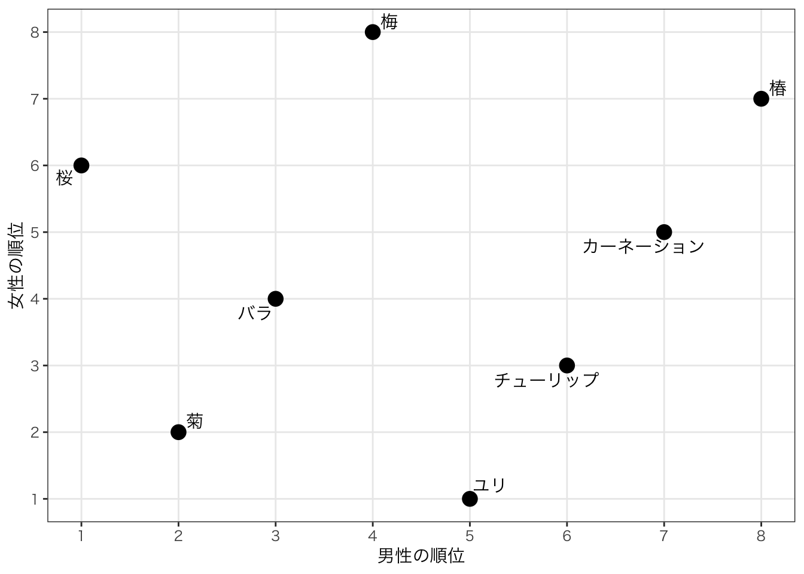
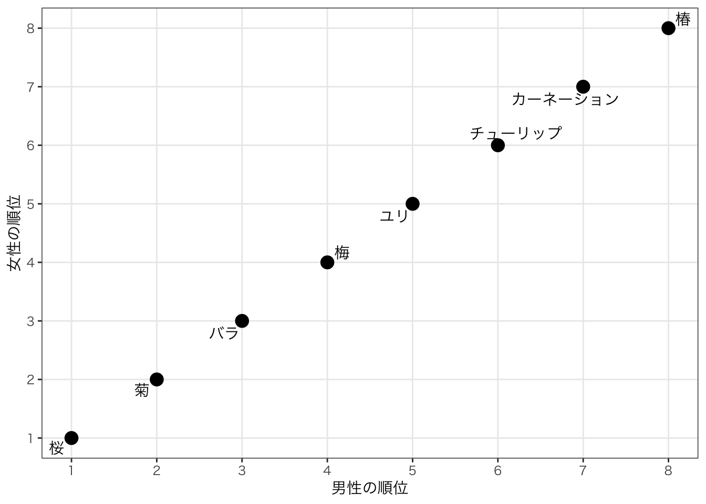

Chapter 11 単回帰分析
11.1 回帰分析
回帰分析は、２つ以上の変数があるときに、ある変数Yのばらつきが他の変数によって説明できる関係を定量的に示す式を求めることを目的としている。
経済学の実証分析では、回帰分析を用いて因果関係を明らかにしようとすることを目的としている。 しかし、注意しなればいけないのは、ただデータを回帰分析して推定しただけで出てきた結果が必ずしも因果関係とは限らないということである。
まず回帰分析を理解するために、単回帰分析から勉強しよう。 単回帰分析とは、説明する側の変数の数が一つである場合の回帰分析である。ここでは２つの変数XとYを考える。
回帰分析では、説明される側の変数Yを目的変数, 被説明変数, 従属変数などと呼ぶ。 説明する側の変数Xを説明変数、独立変数などと呼ぶ。ここではYを目的変数、Xを説明変数と呼ぶように統一する。
回帰分析はXとYの定量的な関係の構造を求めようとすることである。この構造のことをモデルと呼ぶ。 このモデルは、様々な関係が考えられる。これから説明するモデルは線形回帰と呼ばれ、直線的な関係があることを前提として推定するが、当然ながら非線形的（Xが増えると、最初はYも増えるが徐々にYが減少するようになる、など）な関係も存在しうる。そういった藻で右派非線形回帰と呼ばれる。
もっともシンプルな線形回帰の式が、以下の一次方程式で表される関係である。
\[ Y = \alpha + \beta X \]
ここで、\(\alpha\)と\(\beta\)は回帰係数(regression coefficient)または単に係数と呼ばれる。 YとXの間に、このような線形的な関係があるだろう、という前提で具体的にどのような定量的な関係があるかを推定するのが回帰分析である。
たとえば、上の例で気温とアイスクリームの売上を考えてみる。 気温を\(X\), アイスクリームの売上を\(Y\)と考えると以下のような関係があると考える。
\[ Y = \alpha + \beta X \]
ここでは、一般的に気温とアイスクリームの関係は、上の式で説明できると考えるのである。つまり、母集団における関係は上の式で表せられると考える。 しかし、当然ながら、上の式だけでは現実とは一致しない。大まかには、気温が上がればアイスクリームの売上が上がるが、上の式では例えば30度の日の売上はいつもおなじになる。しかし、現実には同じ気温での他の観察されない変数の影響や何らかのランダムな要素で上がり下がりがあるはずである。 そのような要素をすべてランダムな要素として、確率的な事象として扱ってしまう。すると、以下の式が得られる。
\[ Y = \alpha + \beta X + \varepsilon \]
この\(\varepsilon\)は誤差項（撹乱項）と呼ばれる。誤差項は、期待値が0, 分散が一定, 異なった誤差項は無相関、という条件を満たす確率変数である。
このように、母集団における関係のモデル化ができたが、統計的推定の項で説明したように、我々は母集団の真の姿はわからない。しかし、手元にはデータ（サンプル）がある。データを使って、これらの係数を推定することで、母集団における関係を把握しようとするのが回帰分析の統計的な手続きである。
変数Yのデータを\(y_i\), Xのデータを\(x\)と表記しよう。\(i\)は何番目のデータかを表す添字である。 データを用いると我々は以下のような式を推定することになる。
\[ y_{i} = \alpha + \beta x_{i} + \varepsilon_{i} \]
どのように推定するかは後に説明するが、データを用いて推定された結果、以下のような結果を得ることになる。
\[ y_{i} = \hat{\alpha} + \hat{\beta} x_{i} + \hat{e}_{i} \]
^はハットと読む。このハットは、ここでは「推定値」であることを示す。母集団におけるモデルの係数という知りたいがわからないものの数値を、手元のサンプルを使って推定した結果であることを示している。
また、一番最後の\(\varepsilon_{i}\)だったものが、\(\hat{e}_{i}\)に変わっていることに気づいただろうか。 これは、残差と呼ばれるもので、誤差項の推定値となるものである。
11.1.1 Rによる単回帰モデルの推定
まずは、Rで実際にやってみて、結果を解釈しながら理解していこう。
Rで回帰分析をする方法はたくさんあるが、まずはもっともシンプルな方法としてRに標準搭載されているlm()関数で推定する。
まずはsimple_reg.Rというスクリプトを作成しよう。
そして、よく使うライブラリを読み込んでおく。
データをダウンロードする。
# dataフォルダを作成していない場合はdataフォルダ（ディレクトリ）の作成
fs::dir_create("data")
# データのダウンロードとdataフォルダへの保存
download.file("https://github.com/keita43a/regression_tutorial/blob/main/data/ice_cream.csv?raw=TRUE",
destfile="data/ice_cream.csv")ダウンロードしたデータを読み込む。
次に、データを読み込む。
まずはデータを確認する。
## [1] "day" "temp" "ice" "accident"## # A tibble: 6 × 4
## day temp ice accident
## <dbl> <dbl> <dbl> <dbl>
## 1 1 6.7 207. 0
## 2 2 32.3 565. 135
## 3 3 15.4 335. 28
## 4 4 13.1 88.5 33
## 5 5 24.1 341. 68
## 6 6 24.2 438. 42それぞれ、day(日), temp(気温), ice (アイスクリームの売上), accident (水難事故件数)というデータが記録されている。
それでは、気温とアイスクリームの売上の関係を見る散布図を描いてみよう。

上でも見たように、気温が上がればアイスクリームの売上が上がるという右肩上がりの関係がある。
単回帰分析でやろうとしているのは、この関係を定量的に把握して、線を引くことである。
今書いたggplotのコードに、geom_smooth(method="lm",se=FALSE)というレイヤーを加えてみよう。

青い線が表示された。これは実質的にはggplotの機能として、単回帰直線を推定して、それを描画するということを行っている。
では、実際に回帰分析を行ってみよう。
Rでは、回帰分析を行う関数の中で、目的変数と説明変数の関係をy ~ xのように波線で挟んで書く。
data引数で使うデータを指定し、その中のどの変数をそれぞれ目的変数と説明変数にするかを指定する。
推定した結果は、reg1というオブジェクトに格納してから、表示しよう。
##
## Call:
## lm(formula = ice ~ temp, data = dat_ice)
##
## Coefficients:
## (Intercept) temp
## 7.583 19.645すると、結果として、Callという部分とCoefficientsという部分に分かれた結果が表示される。
結果はCoefficientsの部分である。
ここでは、(Intercept)というのは切片のことであり、上の式の\(\hat{\alpha}\)にあたる推定値である。
回帰直線の傾きを表す係数の推定値\(\hat{\beta}\)は、tempの下に表示されている。
すなわち、この結果から、以下のような推定値が得られたことになる。
\[ y_{i} = 11.37 + 18.69 \times x_{i} + \hat{e}_{i} \]
これを素直に解釈すると、「気温が１℃上がると、アイスクリームの売上が18.69万円上昇する」ということができる。
11.1.2 回帰係数の統計的な推定
まず係数の推定結果を出して、推定することができた。
ここで推定されたreg1に入っているlmオブジェクトは、summary()関数を適用することでさらに詳細な内容を見ることができる。
##
## Call:
## lm(formula = ice ~ temp, data = dat_ice)
##
## Residuals:
## Min 1Q Median 3Q Max
## -235.15 -69.57 15.17 66.73 187.50
##
## Coefficients:
## Estimate Std. Error t value Pr(>|t|)
## (Intercept) 7.5832 17.7088 0.428 0.669
## temp 19.6445 0.7882 24.922 <0.0000000000000002 ***
## ---
## Signif. codes: 0 '***' 0.001 '**' 0.01 '*' 0.05 '.' 0.1 ' ' 1
##
## Residual standard error: 89.82 on 98 degrees of freedom
## Multiple R-squared: 0.8637, Adjusted R-squared: 0.8623
## F-statistic: 621.1 on 1 and 98 DF, p-value: < 0.00000000000000022summaryを適用せずに見た結果と違って、Residualsという項目が追加され、またCoefficientsの内容も拡充されているのがわかる。
ここで大事なのは、Coefficientsに表示されている表である。 先ほどと同様に\(\hat{\alpha}\)と\(\hat{\beta}\)が表示されているが、推定値以外のものも表示されているために表形式になっている。
Estimateは文字通り推定値であり、先ほど表示されていた数値が入っている。
Std. Errorは推定値それぞれの標準誤差である。
また、t valueはそれぞれの推定値に対して、帰無仮説を0とした場合のt値が表示されており、それに基づいたp値が入っているのがPr(>|t|)の列である。
ここでe-16と表示されているのは10の-16乗を表しており、<がついていることから、p値がとても小さいことを表している。
また、p値の大きさに基づいて*（アスタリスクであるが、慣例的にスターと呼ぶ）が振られている。
この結果であれば、切片の推定値は統計的には帰無仮説である\(\alpha=0\)を棄却できないが、\(\beta=0\)は有意水準1%であっても棄却することができるということになる。
この仮説検定は「推定された数値が0かどうか」ということを検定する。ある推定値が0かどうかは結果に重要な意味をもたらす。ここでは、気温とアイスクリームの関係を推定しているわけであるが、もし\(\beta=0\)ならば、気温が何度であろうがアイスクリームの売上に関係ないことになってしまう。
因果関係を推定する上で、興味のある係数（ここでは\(\beta\)）がゼロかどうか、傾きがあるかどうか、は重要なポイントとなるため、この仮説検定は重要である。
11.1.3 見せかけの相関と単回帰分析
上で説明した見せかけの相関のある変数同士であっても、単回帰分析で推定すること自体は可能である。
上でみたように、アイスクリームの売上と水難事故の件数を単回帰分析してみよう。ここでは水難事故の件数を目的変数として推定してみる。
##
## Call:
## lm(formula = accident ~ ice, data = dat_ice)
##
## Residuals:
## Min 1Q Median 3Q Max
## -58.235 -20.513 -2.319 18.319 82.187
##
## Coefficients:
## Estimate Std. Error t value Pr(>|t|)
## (Intercept) -4.49169 5.71410 -0.786 0.434
## ice 0.10141 0.01251 8.104 0.00000000000152 ***
## ---
## Signif. codes: 0 '***' 0.001 '**' 0.01 '*' 0.05 '.' 0.1 ' ' 1
##
## Residual standard error: 30.14 on 98 degrees of freedom
## Multiple R-squared: 0.4013, Adjusted R-squared: 0.3952
## F-statistic: 65.68 on 1 and 98 DF, p-value: 0.00000000000152結果を見てみると、傾きの係数は0.10141となっている。 素直に解釈すると、アイスクリームの売上が1万円上がると水難事故件数が約0.1件上がる、もしくは売上が10万円上がると水難事故が約1件増えるということになる。 しかし、上で議論したようにそんな因果関係があるわけではない。しかし、単回帰分析として推定してしまうと、それらしい数字が推定され、統計的にも優位になってしまっている。
だからこそ、単純にデータを単回帰分析して結果を解釈することは危険であり、分析するためにどういうロジックでその仮説が導かれるかを吟味する必要がある。また、その仮説が他の変数などに影響される見せかけの相関の可能性はないかどうかを十分に検討する必要がある。
11.2 回帰分析の推定方法
回帰分析はどのように推定されるのであろうか。もっと簡単に言い換えれば、どういう基準で散布図に”適切な”線を引くことができるのか。
回帰分析は一般的には最小二乗法という方法で推定されている。
上で説明したように、母集団における単回帰モデルは、切片と係数と説明変数（すなわち直線部分）で説明できる部分と、説明できない部分（誤差項）がある。 最小二乗法は、この説明できない部分の二乗の合計が最も小さくなるような直線を引く、というアイデアである。
下の図は、気温とアイスクリームの売上のデータのうち、最初の10個だけを取り出したものである。 各点はそれぞれのデータポイントを表している。引かれている直線は回帰直線であるが、この直線が通っているところと実際のデータポイントとの目的変数の差が「残差」となる。当然ながら、どうやって直線を引くかによって残差は変わるが、もっとも残差の合計が小さくなるところが「適切な」線だという考え方である。
引かれた線よりも上や下にデータポイントが散らばるので、そのまま合計すると打ち消し合ってしまうため、実際の「距離」として測ることが難しい。しかし、二乗すれば負の値も正になるため、二乗してから合計することで直線の上下関係なくどれぐらい離れているかという残差を評価することができる。

厳密にどのように推定しているかはここでは省略するが、統計学や計量経済学の教科書を見て理解を進めてほしい。
11.3 演習問題：単回帰分析
AERパッケージを読み込む。インストールしていない場合はインストールする。data()関数を使って、CASchoolsというAERパッケージに付属しているデータを読み込む。これは、カリフォルニア州の学校ごとの学生数などのデータである。tidyverseパッケージの関数を使って、学生数studentsと教員数teachersの比を計算し、STRという変数にする。また、国語readと数学mathを足して２で割ったスコアをscoreという変数にする。新たに作成したデータをdat_schoolとして保存する。ggplotを用いて、x軸をSTR, y軸をscoreとする散布図を描く。以下のような図になるはずである（背景色やラベルなどは同じでなくてよい）

STRを説明変数、scoreを目的変数とする単回帰分析を行い、summary()関数を用いて結果を表示しなさい。5.の結果を解釈しなさい。